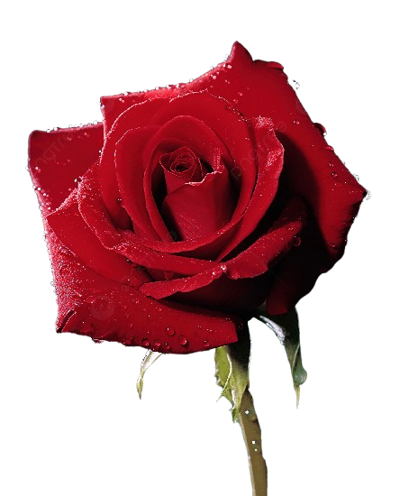
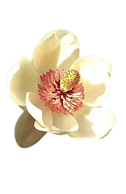
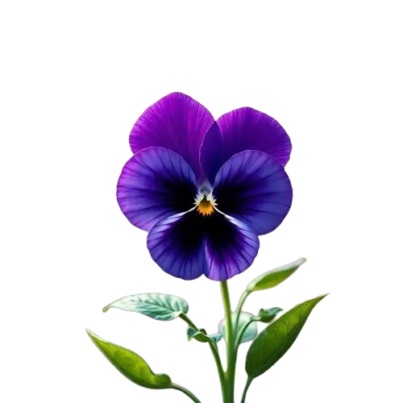
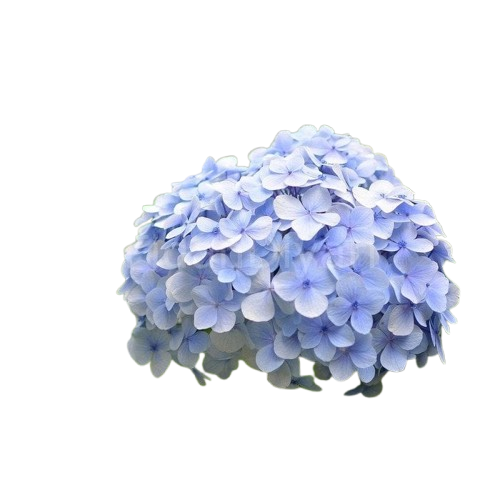

Çiçeklere tıklayıp sürükleyerek 360 derece bağımsız inceleyebilirsiniz

Gül
🔄 Döndürmek için sürükle

Manolya
🔄 Döndürmek için sürükle

Menekşe
🔄 Döndürmek için sürükle

Ortanca
🔄 Döndürmek için sürükle
İklima
İçten bir gülüşün yeter dünyaya, Kelimeler yetmez o güzel ışığa. Lale, manolya sönük kalır yanında, İyi ki varsın, neşe kattın bu bahçeye de cana da. Mutluluk parlar hep o bakan gözlerinde, Ansızın açan en nadide çiçeksin kalplerde.